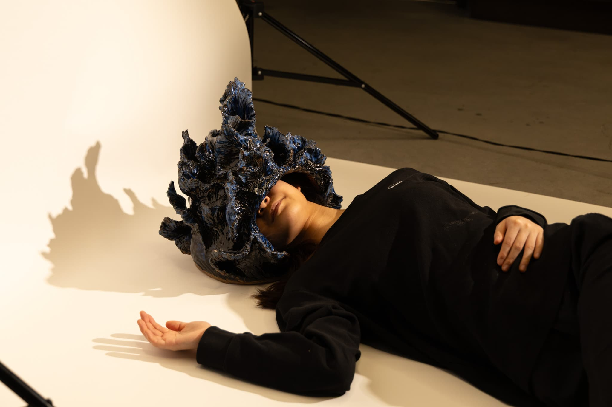
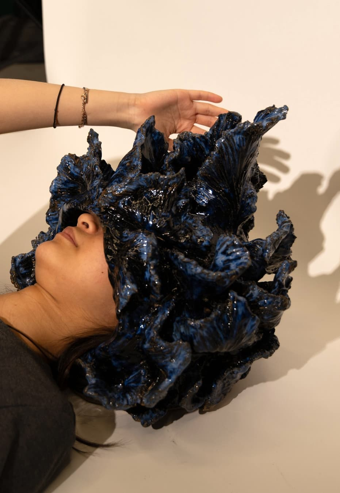
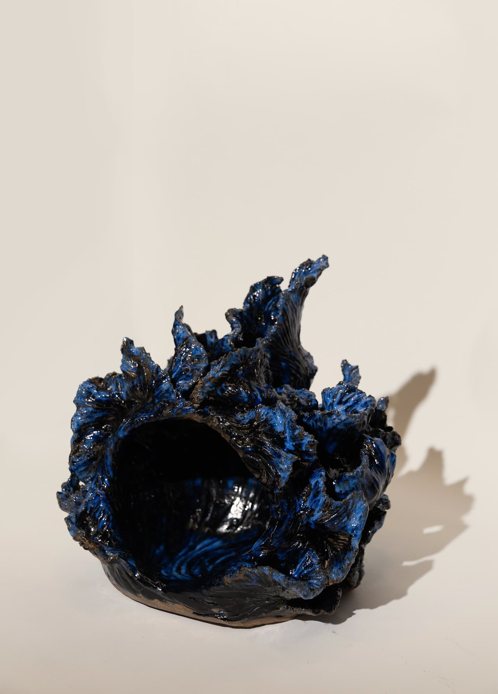
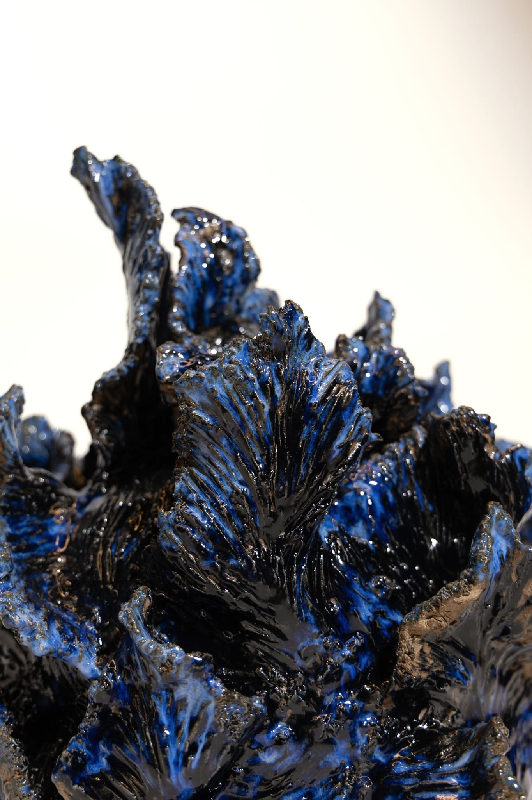

This ceramic sculpture features expressive, wave-like textures that resemble splashing water. At its center is a gentle cavity—an inviting space where one can lay down and rest their head. The material choice of ceramic, typically perceived as hard and cold, contradicts the softness and intimacy suggested by the form. This tension between appearance and experience creates a compelling sensory dissonance.
The fluid surface draws a parallel to the moment of submerging underwater, when external noise is muffled and a fleeting escape from reality is possible. But unlike water, ceramic is rigid and immovable; it brings you back to reality with its solid presence.
And yet, surprisingly, those who have experienced resting their head in this piece describe it as peaceful—even meditative. The proximity of the curved top creates a sense of enclosure and closeness. As your hand glides over the textured surface while your head is cradled inside, the interaction becomes deeply personal. The sound reverberates in a whimsical way, inviting focus and calm. Despite the material’s coldness, the experience feels warm—an intimate contradiction that invites vulnerability and reflection.


